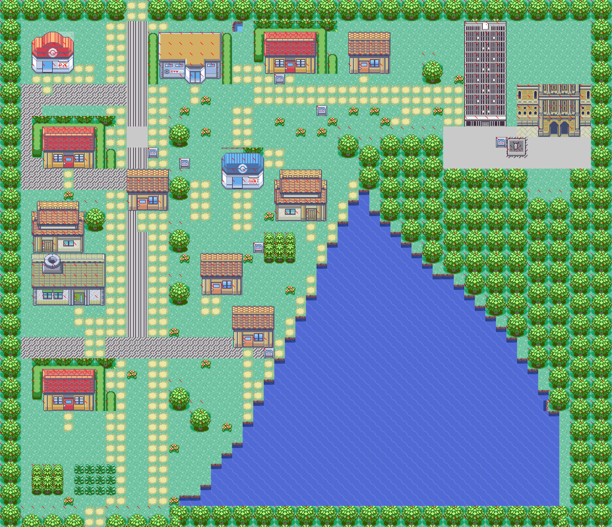
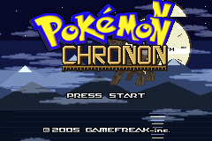
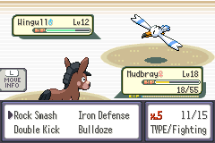
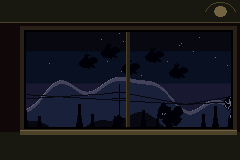
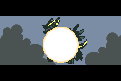
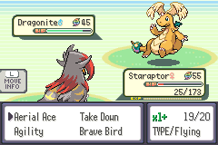
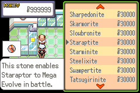
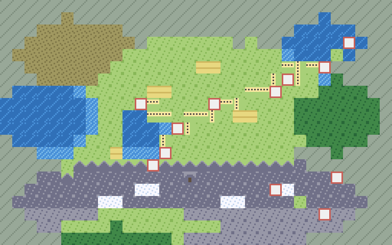

Pokémon Romhack · In Development
Pokémon Chronon
A story-first ROM hack of Pokémon Emerald, set in Helvera: an alpine region of lake towns, funiculars and punctual trains, where a very old and very polite company has begun selling the time itself.

The premise
Helvera runs on rail time. Clocks are civic furniture, punctuality is a moral position, and the player steps off the night train from Berolin four minutes late through nobody’s fault. The four minutes do not come back. A survey company keeps turning up in villages that have nothing worth surveying, the bells in the capital ring a little after they should, and one clockmakers’ guild is quietly refusing to adjust anything until someone explains what it would be adjusting to.
Eight gyms, a wholly new region, and no borrowed maps: every town, route, gym and interior is original geometry. Harder than the original game, far gentler than the difficulty hacks, and written dry.
From the game






The region

Built like software
No map in Helvera is drawn by hand in a map editor. Each one is a small Python program, compiled through a single choke point where three grammars run: trees, water banks and jump ledges, each one measured from the original game’s maps rather than invented. Where the games always pair a tile, the compiler pairs it; where they never leave a shore unbanked, neither can we.
Eighteen audits gate every commit. Gym puzzles are proved solvable by exhausting their entire state space; soft-locks are hunted as graph problems over the whole region at once; dialogue is measured in pixels against the font’s own width table. The documentation, including the repository’s README, is generated from source, so it cannot go stale.
Measured from the repository, August 2026. 5 of eight gyms battle-ready; the count moves.
Where it stands
In development, most of the way through Act II. The source repository goes public at the first release, in the decompilation community’s standing posture: source and patches only, nothing of Nintendo’s ever distributed, non-commercial permanently.
Pokémon Chronon is a fan work. Pokémon is © Nintendo, Creatures Inc. and GAME FREAK inc.; this project is not affiliated with or endorsed by them. Screenshots show a work in progress.